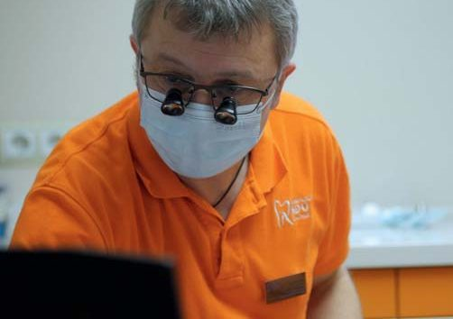

Вітальня «ДентАрту» · журнал «ДентАрт» 2022 №3
Олександр Кириленко: «Після Перемоги України відкриються такі безмежні горизонти, що не стати класним стоматологом буде гріх»

Сьогодні у Вітальні «ДентАрту» ми зустрічаємося з Олександром Миколайовичем Кириленком, відомим стоматологом-ортопедом, засновником і головним лікарем полтавської стоматологічної клініки КомпоДент-Орто, членом Української академії естетичної стоматології, екс-головою і дійсним членом осередку Асоціації приватних стоматологів України у Полтавській області. І розмова наша як про стоматологію, так і про те, що для українських стоматологів стало святою справою під час війни, — волонтерську допомогу Збройним Силам України, передусім у збереженні життя і здоров'я наших воїнів.
— Пане Олександре, Ви відома постать у стоматологічній спільноті. Тож наше традиційне запитання: як Ви стали стоматологом? Це була доля чи випадок?
— Це був дуже свідомий вибір. І він дивував навіть учителів у школі. Мої ровесники у творах писали, що хочуть бути військовиками чи космонавтами, а коли я вперше написав, що хочу стати стоматологом, однокласники це бурхливо обговорювали. Мій старший брат Володимир – зубний технік, він привозив із лабораторії фантомні протези, коронки, і для мене було дивом, як це можна таке своїми руками виготовити?! Я дуже прагнув самому навчитися таке робити, тому вже не хотів бути ні інженером, ні вчителем – тільки стоматологом.
Після восьмого класу я вступав до зуботехнічного училища, але не вступив, хоча вісім класів закінчив на відмінно. Труднощі на іспитах були пов'язані лише з тим, що в тому училищі в Олександрії на Кіровоградщині іспити приймали російською мовою — ось до такого довела політика переслідування української мови. Що ж, я повернувся в школу, закінчив 9-й клас, і в 1982 році мене вже без іспитів прийняли в те училище. Зуботехнічне училище я теж закінчив на відмінно, а у Полтавський медичний стоматологічний інститут вступив у 1985 році, склавши один іспит, бо ж мав червоний диплом.


— Сьогодні уся ваша родина – стоматологи. Як це сталося?
— Студентське кохання… Однокурсниця, одногрупниця Лариса Шинкевич стала моєю дружиною. Усі роки навчання ми були разом. На четвертому курсі народилася наша перша дитина – Марійка, сьогодні вона вже доросла і теж стоматологиня. Найцікавіше, що я дітей відмовляв від стоматології: чим далі працюєш, тим більше розумієш, яка це нелегка професія. Але діти, обираючи фах, реагують не стільки на застереження батьків, скільки на свої почуття. Нині Марія вже ортодонт, а Антон закінчив зуботехнічний коледж, допомагає мені як зубний технік, зокрема з 3D технологіями, і вступив у наш Полтавський державний медичний університет.
«Коли лікую за свій кошт, це особливо надихає»
— Коли Ви відчули, що треба мати власну клініку, і чому? Адже мати власну клініку, бізнес – це непросто…
— Мало того, що непросто, я ще й не бізнесмен такий… Для мене бізнес – щось трохи наче не моє. І в той же час із самого початку для мене стоматологія – це приватна справа, де ти з початку до кінця відповідаєш за всі процеси. Через це відчуття я завжди знав, що повинен відкрити приватну клініку. Життя змушує користуватися якимись елементами бізнесу, тож сьогодні я вже бізнес-стоматолог, хоча… Коли я виконую роботи безкоштовно, на волонтерських засадах, то вони у мене навіть краще виходять. Коли я лікую за свій кошт чи інші благодійні джерела, це особливо надихає, душа розкрилюється…
— Я знаю багатьох лікарів, у яких бізнес убив стоматолога…
— Я теж знаю таких. Якщо ти вибудовуєш приватну структуру, то передусім маєш вкластися матеріально, інтелектуально, працювати як стоматолог і не очікувати великих прибутків сьогодні ж. А коли ти і твої колеги досягнете певного рівня професіоналізму, впровадите новітні технології, гроші вже автоматично надходитимуть. Треба закохатися в цю професію, працювати так, щоб пацієнт був задоволений, бо його стоматологічне здоров'я зміцнилося. І тоді гроші вже будуть іти самі.
— А як ваша клініка КомпоДент-Орто працює в умовах воєнного стану?
— Клініка працює за повною програмою, усі сім днів на тиждень: робимо протезування, брекет-лікування, ендодонтію, пряму реставрацію зубів… Спочатку після повномасштабного вторгнення було важко утримати такий процес, і морально, і невелику кількість персоналу ми втратили, але все це довелося витримати, і я вважаю своїм досягненням те, що клініка працює. Збережений рівень зарплат, який задовольняв би персонал, і я цьому радий, враховуючи те, що ми багато лікуємо воїнів за свій кошт.

— Розкажіть, як осередок Асоціації приватних стоматологів України переріс у волонтерську організацію.
— Під час війни волонтерська допомога захисникам України – це питання нашого виживання. Оборона країни, захист життя і здоров'я воїнів – затратна річ, і постійна ефективна допомога фронту без об'єднання зусиль неможлива. Тому я використав цю платформу стоматологів, і група наша зростає, вона вийшла за межі лише приватних практик: тут є і викладачі з нашого медуніверситету, і стоматологи з комунальних клінік, і навіть лікарі – не стоматологи. Долучилися й стоматологи з інших областей і навіть з-за меж України.
— Члени осередку надають невідкладну безкоштовну допомогу українським воїнам, які по службі опинилися в Полтаві. Як організована ця допомога?
— У нас уже певний досвід був і до цієї активної фази війни. З 2014 року ми надавали стоматологічну допомогу нашим воїнам – і після Іловайська, і після Дебальцевого. Моя клініка є оглядовою: ми добре знаємо, які клініки у Полтаві на чому спеціалізуються, тож і направляємо відповідно – кого на хірургію, кого на терапію чи ендодонтію. Прикметно, що бійці потребують якісного стоматологічного лікування – це сучасні люди, які хочуть якісної допомоги. Ми всіх оглядаємо, частину пацієнтів самі ж і лікуємо, решту розподіляємо по клініках Полтави і навіть у Кременчук. Так усе йде організовано, і це дозволяє уникнути перевантажень.


«Формуємо аптечки для фронту, які постійно удосконалюються»
— Група, яка назвалася «Тил Полтава», спеціалізується суто медично: комплектує індивідуальні аптечки для воїнів і медичні наплічники для військових медиків. З чого складаються ці вкрай потрібні на фронті речі?
— Я вже почуваюся профі у формуванні цих тактичних речей. У березні були Zip-пакети, куди ми з автомобільних аптечок, привезених з європейських країн, перекладали потрібні на фронті засоби. Сьогодні забезпеченість ЗСУ аптечками за державний кошт значно зросла, однак є питання, пов'язані з терміновістю їх надходження: турнікет чи бандаж потрібен тут і тепер, а ми можемо оперативно передати їх конкретному підрозділові чи блокпосту.
Сьогодні ми дійшли думки, що можна готувати аптечок менше, але кращої якості. Тепер наші аптечні сумки більш ергономічні та зручні, з відривною платформою: тактична медицина розрахована на поміч самому собі, і оперативність тут дуже важлива. Щодо турнікетів, то нині в Україні беззаперечно приймають два види – американський «CAT» і наш український «СІЧ». Ми формуємо такі аптечки, щоб вони взагалі стали еталоном для фронту у відповідності зі світовими стандартами.


— Волонтерство потребує коштів. Як фінансується діяльність групи «Тил Полтава»?
— Багато джерел, багато небайдужих людей, на щастя. Перші фінансисти – це були мої знайомі. Перші тижні після 24 лютого – це було просто щось фантастичне, як українці згуртувалися навколо допомоги ЗСУ! Потім найактивнішу підтримку надавали мої однокурсники, випускники ПДМСІ 1992 року випуску. На рахунок благодійного фонду «Тил Полтава» кошти надходять не лише від стоматологів, а й від загалу полтавців, яких навколо себе згуртувала моя донька Марія Кириленко – керівниця та засновниця цього фонду.


«Уся Україна вірить у нашу Перемогу! Уся Україна на це працює!»
— Періодично я зустрічаю на Ютубі опитування «Як ви, українці?». За який варіант відповіді Ви віддали б свій голос?
— Я пишаюся українцями, які сьогодні захищають найвищі людські цінності від світового зла. І горджуся, що я українець. Я вірю, що навіть оця трагедія, оця війна очистить Україну, кажучи словами Тараса Шевченка, від «рабів, підніжків, грязі москви», дасть нам таку віру у свої сили, що після всього цього Україна просто стартоне! Настала черга нашому поколінню і поколінню наших дітей це виборювати. Ми переможемо! Бо інакше нас просто не буде.
— Як уявляєте собі день, коли в Україні буде оголошено про перемогу?
— Мені аж подих перехопило… Я дуже цього чекаю. Сьогодні ще важко гадати, коли конкретно це буде, але це неодмінно станеться. Уся Україна у це вірить! Уся Україна на це працює!
— Якою, на Ваш погляд, має бути Україна після перемоги?
— Ідеалізувати не буду, я доросла людина, але те, що буде значно краще і трішки простіше й чесніше у підходах до держбюджету, до олігархічних структур, до розвитку підприємництва, більше справедливості, – у це я вірю. У будь-якого чиновника уже будуть запобіжники. Українська Держава має бути справедливішою, прогнозованішою, ще демократичнішою. Світлішою, чистішою у всіх розуміннях цього слова. І, ясна річ, – надійно захищеною від агресивного сусіда.
— Стоматологічний прийом і волонтерство заповнюють усі Ваші дні. А чи буває у Вас вільний час і чим він заповнений?
— До війни і під час війни – це вже зовсім різні речі. Якщо в мирний час я міг захоплюватися спортивною риболовлею чи грати у більярд, то нині у вільну годину я йду в те приміщення, де у нас конвеєр зі збору аптечок тактичної медицини, і наводжу там порядок. Для мене це такий самий заспокійливий засіб, як для когось в'язання. У цьому приміщенні працюють волонтерки з ансамблю українського танцю «Візерунки» нашого ПДМУ, яким керує моя дружина Лариса Кириленко. Ці завзяті, талановиті українки збирають аптечки для фронту.
«Не стати класним стоматологом буде гріх…»
— І традиційне побажання читачам «ДентАрту»…
— Я бажаю всім колегам-стоматологам, усім українцям тільки Перемоги! І не просто чекати її, а робити все для неї! Багато чого ще можна побажати колегам: любові до своєї справи, професійних злетів… За умови Перемоги усе це буде. І Україна стане однією із найсильніших держав світу. Ще за нашої пам'яті. Я в це вірю! У нас дуже талановита молодь. І перед тими, хто по-справжньому любить свою професію, відкриються такі безмежні горизонти, що не стати класним стоматологом буде гріх…
— Саме так! Дякую, що знайшли час для розмови!
— Разом до Перемоги!